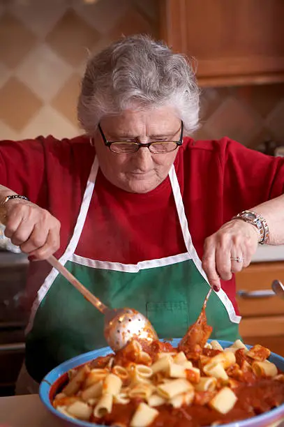
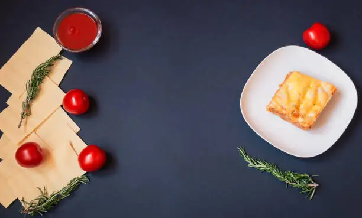
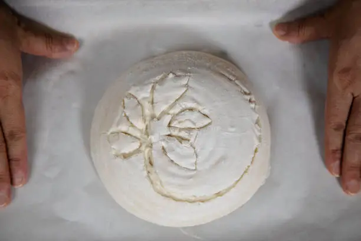
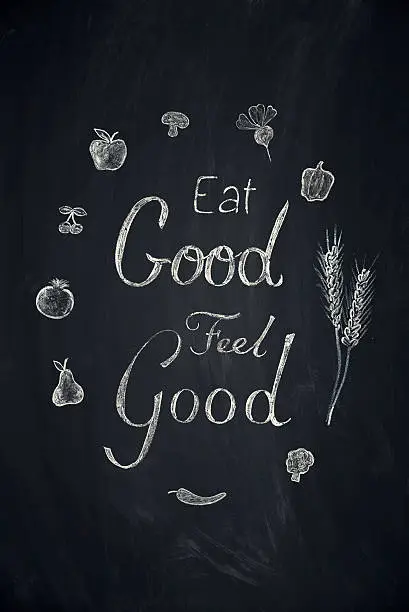

TasteTales Blog
Welcome to our cozy corner of stories, where food isn't just about taste, but about memories, connections, and the heart behind every meal. Dive into narratives from home cooks, family traditions, and the magic of shared moments around the table.
The Secret Ingredient: Grandma Elena's Enduring Love for Pasta
Every Sunday at Grandma Elena's house, the air was thick with the scent of simmering tomatoes and fresh basil. Her hands, gnarled with age but still agile, would expertly knead dough for homemade pasta, a tradition passed down through generations. It wasn't just a meal; it was a ritual, a symphony of flavors and laughter. She always said the true secret ingredient wasn't in the sauce, but in the love she poured into every strand of tagliatelle. This blog post delves into the heart of her kitchen, exploring how her simple recipes became powerful conduits for family history and unwavering affection...
Read Full StoryA First Date Recipe: How Lasagna Sealed Our Love Story
Our first date wasn't at a fancy restaurant; it was in my tiny apartment kitchen, attempting to bake a lasagna. Alex, usually so confident, was surprisingly clumsy with the ricotta, and I couldn't stop giggling as flour dusted his nose. What started as a chaotic culinary experiment turned into an evening of shared laughter, intimate conversation, and a surprisingly delicious (though slightly burnt) lasagna. That night, amidst layers of pasta and cheese, we realized we had found something truly special. This is our story of how a humble dish became the foundation of our love...
Read Full StoryThe Therapeutic Art of Sourdough: A Baker's Journey to Inner Peace
In a world that constantly rushes, the slow, deliberate process of baking sourdough has become my sanctuary. There's something profoundly meditative about nurturing a starter, feeling the dough come alive under my hands, and waiting patiently for it to rise. It's a dance between science and art, a lesson in patience and letting go. Each crackle of the crust as it cools, each airy crumb, is a testament to the quiet satisfaction of creating something beautiful from scratch. Join me as I share my therapeutic journey with sourdough, and how this ancient craft brought me unexpected peace...
Read Full StoryWhat This Dish Means to Me: My Mother's Aloo Gobi

For me, a plate of Aloo Gobi isn't just a vegetarian curry; it's the taste of my childhood, the scent of home, and the embodiment of my mother's boundless love. Every time I eat it, I'm transported back to her bustling kitchen, the sound of her bangles clinking as she stirred, and her gentle smile. It was her go-to comfort food, simple yet profound, and it always seemed to appear exactly when I needed it most. This is a personal "love letter" to a dish that fed my body and nourished my soul, carrying stories of resilience, warmth, and unconditional love...
Read Full StoryEmbracing Slow Food: A Gentle Guide to Mindful Eating and Living
In our fast-paced world, the concept of "slow food" feels more vital than ever. It's not just about cooking slowly; it's a philosophy of life—savoring each ingredient, appreciating the journey from farm to fork, and truly connecting with the people you share meals with. This blog post is a gentle invitation to step off the culinary treadmill and embrace the beauty of mindful eating. We explore practical tips for incorporating slow food principles into your daily life, from choosing seasonal produce to creating a relaxed dining atmosphere, fostering deeper connections with both your food and your loved ones...
Read Full Story